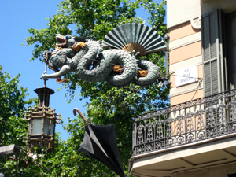
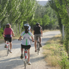

SPAIN 2010
So you may be asking…why Spain? why in 2010? Well, it all had to do with Ryan and his choice of college and majors. Georgia Tech’s computer science program offers a 10-week summer session in Barcelona, and Ryan decided to take advantage of all it had to offer. (Not only did he take 4 classes, but he also had two one-week breaks in the schedule that he used to travel: first to France and Italy with 4 other students, and then to Switzerland on his own.) So then Karen got to thinking that it might be a fun way to visit Ryan, see the sights and celebrate her 50th birthday!
Karen started off with a Frommer’s guide to plan the trip, but quickly realized this was more than even she could handle – trying to figure out whether or not we should travel by train or by car, which cities we should visit, where we should stay, etc. So she turned to the Internet and found a Spanish travel agency called Madrid & Beyond, and they did an amazing job of customizing the trip just for us. They booked the hotels, train and plane tickets and arranged for guided tours in each city. What a treat!
Here are a few general things that we experienced and observed:
It was easy for us to adapt to “Spanish time”; we didn’t start our day until 10:00 a.m., had lunch around 2:00 p.m., then because it was so hot and most restaurants close their kitchens from 4:00 – 8:00 p.m. it was quite natural to fall into “siesta time” (even for Claire, who never naps at home!), and so dinner at 9:00 or later made sense because it was cooler and that’s when activity picked up again on the streets. (A couple of times, though, we couldn’t wait until that late and found ourselves eating with a small crowd – all Americans! – at 8:00 p.m.)
Karen had read that Spain was one European country where English is not readily spoken. The reason seemed to be that Spain is made up of many distinct regions, and some have their own language (Catalan in the region of Barcelona, Basque in the northwest, Galician north of Portugal and Castilian, or Spanish, in the rest of the country). But we managed to get by with sign language, Claire’s one year of 7th grade Spanish, and Jibbigo, a wonderful iPhone app!
Karen had also read (and heard from many others) that pick pocketing was a real threat. And as it turned out, Karen’s bag was unzipped twice – once on the subway in Barcelona and once by a lady who was trying to “help” us when we were lost in Sevilla. The good news is that Karen had intentionally not put anything of value in that pocket; the bad news is that when they realized this, the thieves left and moved on to someone else!
Every tour included a great deal of Spanish, world and art history, which Karen loved, George tolerated (for the most part) and Claire claimed she was overdosed with! It made us realize how little of a liberal arts education we got as engineering majors (and as a New York State middle school student!).
One of our guides commented that tourism is still a rather new industry, as there were many restrictions imposed during the Franco regime from 1936 to 1975, and so although many people have consistently flocked to the coastal regions, they are trying to attract tourists to explore the rest of the country. We are happy to say that we did (well, most of it anyway) and would highly recommend a visit to see all that it has to offer!

One Fantastic Journey


From the bustling sights and sounds of the cities, to the peaceful countryside, we thoroughly all that Spain has to offer: a bounty of wonderful food (and wine!), warm weather and blue skies, and many impressive and majestic historical sights!
